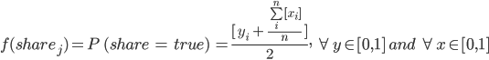

Modeling information flows across trusted members of an organization
Nikolos Gurney & Carolynne Hultquist
30 June 2017
Overview
The flow of information in organizations is a determinant of organizational success. For example, the flow of information in financial markets from firms to analysts and investors has important implications in both firm success and retirement savings.[1] It is reasonable to assume that inter-actor trust plays an important role in how information flows, not just from firm to investor, but also from investor to firm. Similarly, interpersonal trust within an organization may influence the flow of both implicit and explicit information between workers - a feature that can have major impacts on organizational success.[2] This project seeks to model how trust influences the flow of information in organizations like Spotify, an academic department, or local community.
Model Specifications
Our model is specified to have bits of information (the vector X contains i bits of information; each unique x takes 1 if the information is present and 0 if not) flow among individuals through stochastic interactions in the organizational space based on the level of trust (each individual j owns a trust vector Y in which each yi is a measure of trust for individual i) modeled as a relationship between each pair of individuals. Each individual j decides whether to share with every other individual i they encounter in the organizational space by the share function:
[3]
In short, the probability of each individual sharing information in our basic model is the average of the amount they trust an individual and how much information that individual has. Note that in this simple model we give each aspect of the trust function equal weight and only consider complete bits of information. It is likely the case that the two aspects of the function do not share equal weight - their relative weights may even be dynamic. Furthermore, individuals could (probably do) share only partial bits of information.
Methods
To test our model, we constructed a simplified Agent Based Model (ABM) using the NetLogo platform. The purpose of this ABM is to demonstrate that just levels of trust can impact the sharing behavior and ultimate success of agents in an organizational space. The major simplification is that the agents’ share functions in the ABM do not factor in other agents’ information level. The organizational space of our ABM is a 35 x 35 torus. At setup, each individual is randomly assigned a starting point on the surface of the torus, a random bit of information from a preset amount of available information, and a vector of trust levels for all the other agents in the ABM. With each tick, agents make a random queen move (1 step in any direction), assess if they share their new point with any other agents, and if they do, probabilistically share their entire information list with every other agent at the new point according to their individual share functions.[4] Note that each point has no limit on the number of agents that can inhabit it, moreover, agents decide whether to share with each agent individually. When agent q shares its information with agent w, agent w adds any new information from agent q to its information vector.
Results
The model has values stored in a list of information in which a total amount of information is available to distribute among the individuals. Bits of information are passed between individuals over time. Figure 1 shows how eventually the individuals accumulate bits of information as more data is added to their list through sharing interactions.
Figure 1 - Each line represents an individual shown over time as they gain bits of information. Some individuals gain unique information gradually and others have major leaps.
Additional analysis could involve consideration of the trust network to understand which individuals receive information more quickly. We could look at the effects of initial trust for individuals and globally. Individuals may not trust other individuals strongly or they could be weighted to share more information by having more trust. Or, other measures, like the dispersion of the trust values around the mean (standard error) may be a predictor of information flow outcomes. In a simulation of 30 agents with a maximum trust value of 0.25 and 10 bits of information this proved to be the case. The table below shows the results of regressing the total amount of information agents collected on the standard error of the mean.
Figure 2. To test the impact of individual agents’ trust for other agents, we ran a simple linear regression in which the amount of information, infoCount, is predicted by the standard error of the mean trust level for other agents. Figure 3 in the appendix presents a more robust model of the data, but this simple model illustrates that the spread of agents trust levels is inversely related to their success in obtaining information.
Discussion
There are a number of assumptions that could impact the progression of information sharing in the model. We assume that individuals will share information based on their trust in other individuals. The share interactions are considered as stochastic exchanges with other individuals. Instead it could be more likely if trusted individuals who may normally have contact interact. Every individual starts with a bit of information to share and share all the information they have without a consideration of how likely to have information and if in reality would only share part of the information that is known. In our model all information has the same value but value of information could play a major role in how it is shared amongst ties with different levels of trust.
Future Directions
Before moving forward, we need to add the weighting of other agents’ information level to the share function in the simulation as an aspect of strategic behavior. This would mean that individuals are more likely to share their information when they see that they could also get more information in return from the interactions. This entails adding consideration of other agent information sets to the share function and completing analyses of agent behavior. Once this is accomplished, identifying a relevant empirical setting is warranted so we can compare simulation results with real-world behavior.
Our model was conceived to both approximate and simplify the impact of trust on the flow of information in an organization. Insights from empirical data will likely suggest adjustment of not just the parameters in our model, but also their weighting, flow, decay, etc. For starters, each agent's trust vector is random in our model; in real-world settings the level of trust one person has for another is likely based on factors like previous interactions, personality, and biases. Clearly these factors should at least be considered, if not implemented, in future models.
Our model can only capture single-dimensional information - here that dimension is completeness. In our simulation, we further reduced this to presence. Obviously, information can vary on more than one dimensions. For example, it seems reasonable to assume that information has value and individuals desire high-value info more than low-value information. Moreover, there is likely an interaction between high-value information and the strategic behavior of agents. To illustrate, an agent may be willing to give a low trust agent information in hopes of buying social capital that can be used to acquire high-value information from that agent in future interactions. Although our model does include a strategic element - a higher probability of sharing information with well-informed agents - it does not consider the value of different bits of information. Other important dimensions of information worth consideration are accuracy, sensitivity, source, and timeliness.
Finally, our model does not consider the full network dynamics of organizational members. First, the structure of an organization likely plays a major role in both the flow of information and inter-agent trust. Compounded with the dimensions of information, structure may produce important, dynamic outcomes. Consider a low-level facility maintenance (FM) worker: she likely trusts a human resources (HR) manager’s retirement savings advice but not his advice on how to service the HVAC system. If the FM worker repeatedly interacted with the HR manager, she may learn that prior to earning a graduate degree he worked as an HVAC engineer - knowledge that would results in her updating her trust value for information he provides about HVAC maintenance. Second, individuals do not assign the same value to the same information coming from different people. They weight information based on the source. Likewise, future work should consider the link weights of networked individuals. In our simulation, this could easily be implemented by initializing the agents in a directed network and discounting the share function by the strength of their connections.
Application considerations
It is with measured caution that we suggest this simple model has potential to inform a broad array of organizational communication scenarios. The word organizations brings to mind social structures like governments, business, churches, universities, or teams. It seems quite apparent that within these structures information flows across their trusted members according to the dynamics of trust relationships. An accurate, robust model of how information flows according to trust levels in these and less obvious organizations has the potential to improve organizational outcomes, change the way leaders approach conflict, and hasten responses to the myriad jeopardies organizations encounter. As an example, understanding how individuals share information in their trusted versus general network may enable policy makers to create more efficient systems for reaching dispersed community members in crisis scenarios.
Appendix
Figure 3. The table presents ordered logit results from regressing the information level on the standard error of each agents’ mean trust level while controlling for their trust means.
[1] Healy, P. M., & Palepu, K. G. (2001). Information asymmetry, corporate disclosure, and the capital markets: A review of the empirical disclosure literature. Journal of accounting and economics, 31(1), 405-440.
[2] Shannan, Toby. Personal communication, 2017.
[3] Please excuse the abuse of notation. An important clarification: the brackets around the xi are meant to indicate the number of occurrences of xi taking a value > 0 in the Iverson tradition. As discussed, people may have a partial bit of information, in which case these brackets should be dropped.
[4] An improvement would be to allow them to stay on a patch.